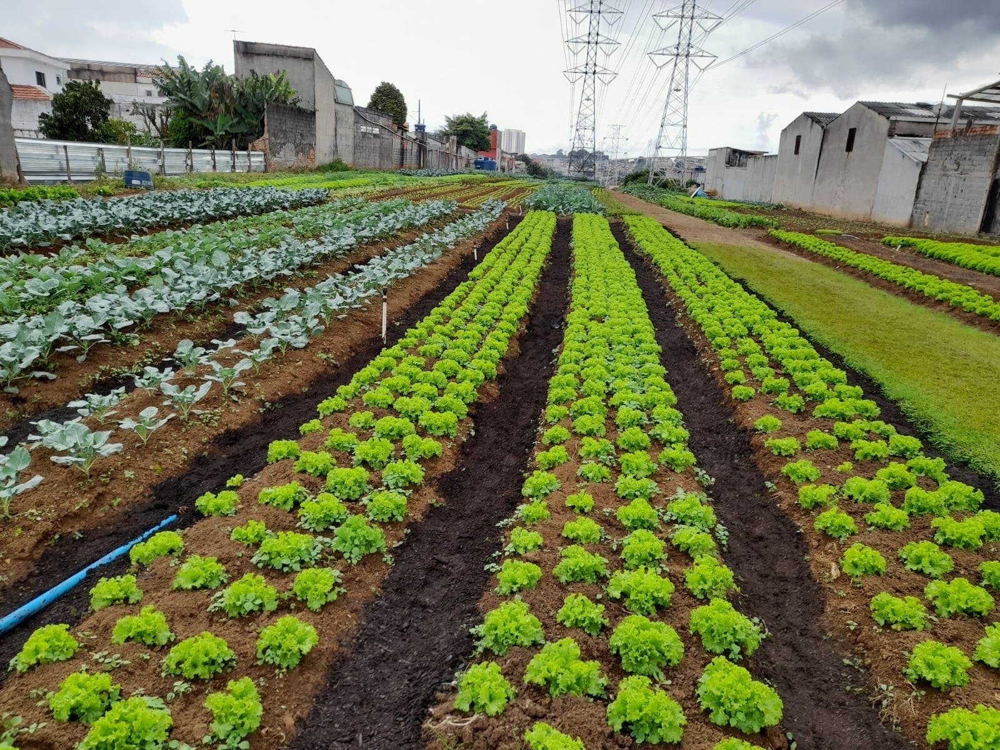

A horta comunitária é um espaço onde os cooperadores cultivam verduras e legumes de forma coletiva, dividindo o trabalho e a colheita.
quem planta sabe esperar, e quem espera sabe colher.
Para aprender mais sobre agricultura sustententável, visite o site da Embrapa
Ficha produzida para aula de programação web.